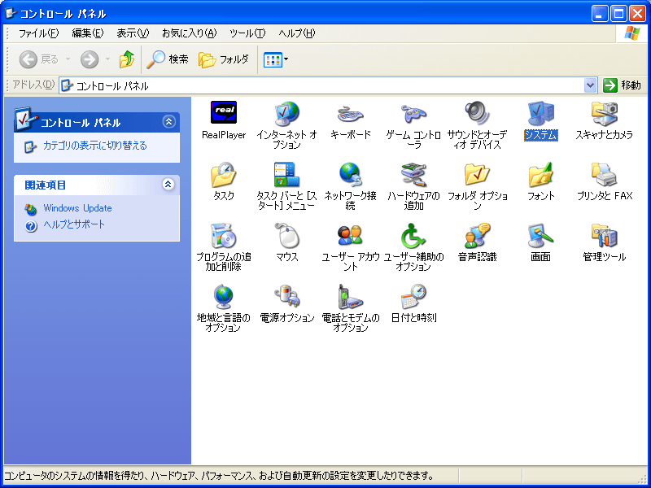
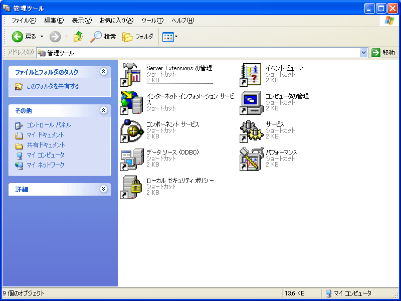
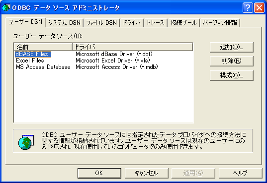
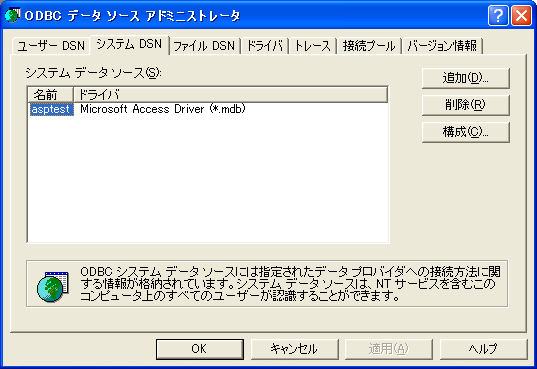
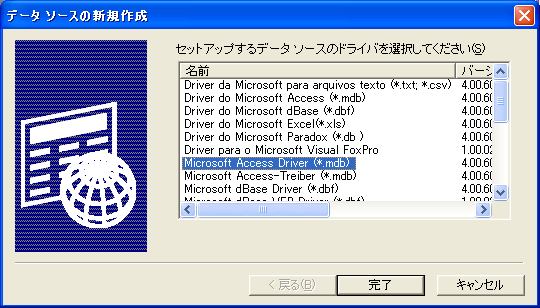
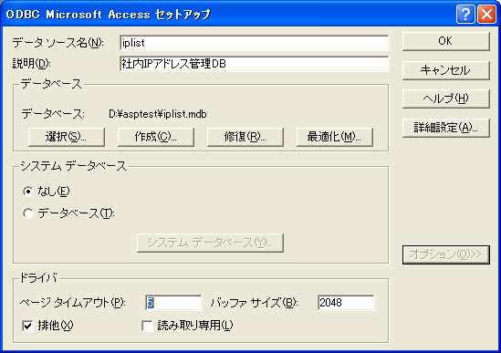
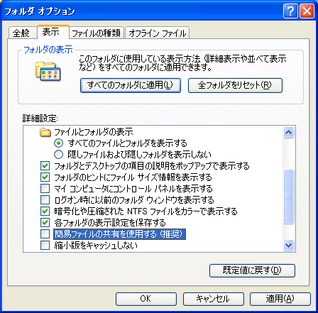

スタートメニューからコントロール パネルを開く

コントロール パネルの中から管理ツールを開く

管理ツールの中からデータソース(ODBC)を開く

ODBCデータソース アドミニストレータのシステム DSNタブを選択する

システム DSNタブを選択後[追加]ボタンを押す
データソースの新規作成ダイアログの中から「Microsoft Access Driver (*.mdb)」を選択して[完了]ボタンを押す

ODBC Microsoft Access セットアップダイアログに以下の情報を入力して[OK]ボタンを押す：
データソース名：iplist
説明：社内IPアドレス管理DB
データベース：データベースへのパス([選択]ボタンを押して入力)
排他：チェックをつける([オプション]ボタンを押して選択)

まず、フォルダ オプションで「簡易ファイルの共有を使用する」が有効になっているときは、無効にする
